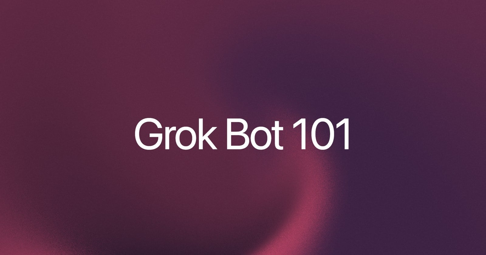
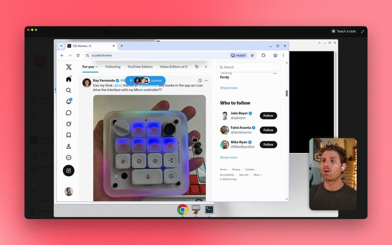
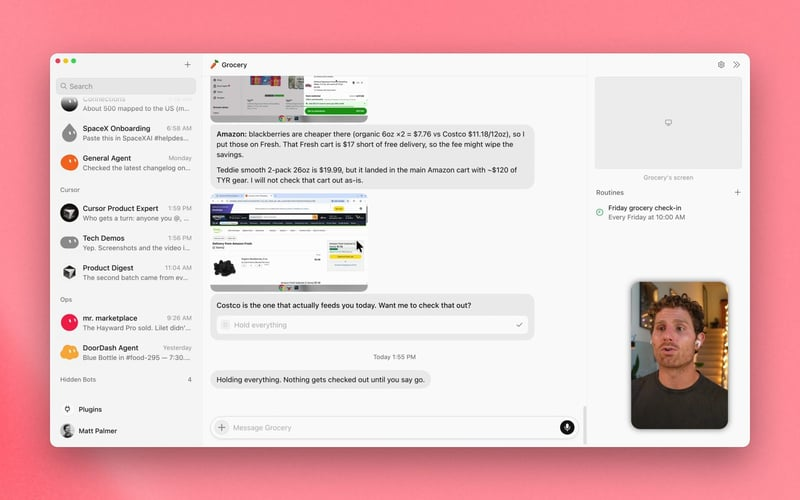
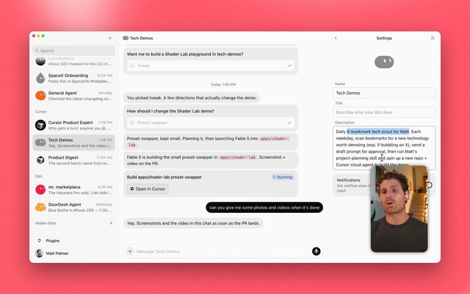
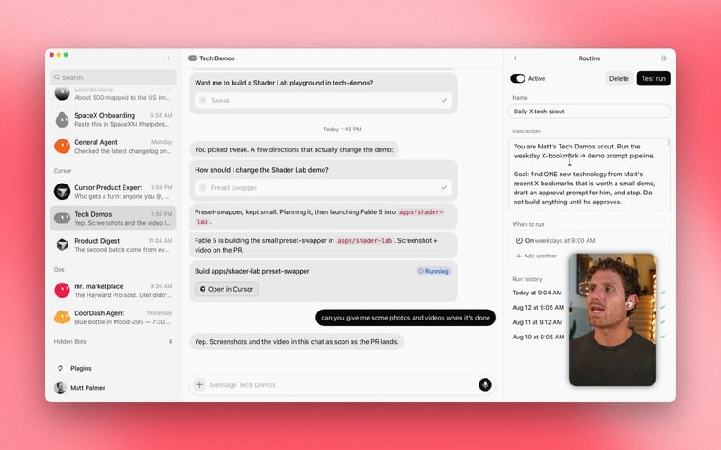
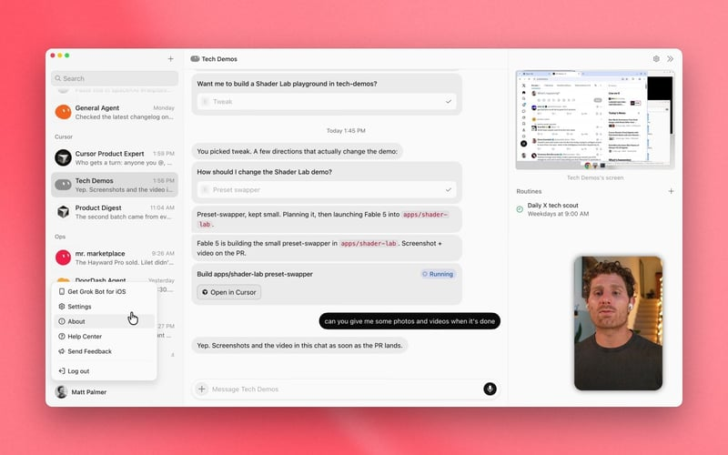
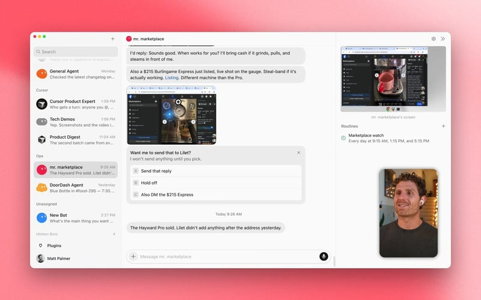
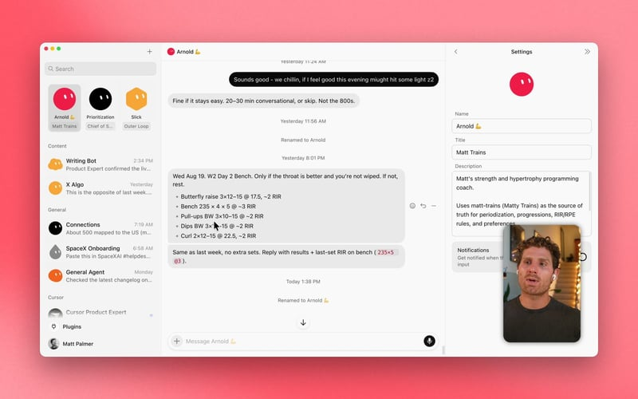
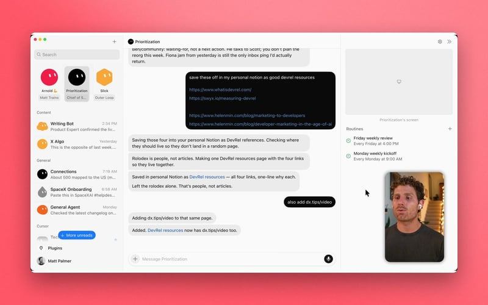

Official guides · 5/27
Grok Bot 101
Grok Bot (xAI's AI assistant that comes with its own computer) is an agent with a computer. Learn how to stand one up, chain specialists, and run the workflows I actually use.

Grok Bot is an agent with a computer.
Using it feels like texting a colleague, except that colleague has a real, persistent desktop. It can do what you can: use apps, browse the web, write and run code.
I work on DevRel at SpaceXSI. A lot of my day is writing code, making content, or typical knowledge work: relaying information, organizing, and planning. I used to write one-off scripts, build software with coding agents, or hack workflows together. Now I give that work to a bot. Standing one up takes 10 or 15 minutes. Then I can tweak it, reuse it, and let it run after I close the laptop.
I recorded a walkthrough if you want to see how I set these up.
What is Grok Bot?
Grok Bot is a personal assistant that can take any action on a computer.
The computer lives in the cloud. It has a desktop, a filesystem, a terminal, and apps. If I click the bot's window, I can use that machine like a remote desktop. The bot has the same access I do.

Grok Bot's cloud computerBecause it has a real computer, I can teach it a workflow by recording a task or by writing a prompt. I asked it to look at Costco and Amazon, add things to my cart, then compare prices, delivery charges, and times.
When a flow needs me, the bot can hand the desktop back the same way a remote computer would. I fill in a CAPTCHA or a 2FA login. It can also send me a secure form for a password or an API (a way for programs to talk to each other) key.
It also runs in the cloud, so I get the same computer from my phone and my desktop. My Marketplace bot can search Facebook for a variegated Monstera Albo because Facebook is already logged in.
Anatomy of a bot
I like to start from a voice note. A bot is a set of instructions, so you can define it however you think.
Behind the scenes, settings are three fields:
Name: Tech Demos
Title: Daily X tech scout
Description: Look at my bookmarks each weekday, pick one technology worth demoing, draft a prompt in my style, wait for approve or deny, then kick a Cursor cloud agent.
You can set these in chat or in Settings, top right.
Be as specific as you can. Describe a workflow exactly as you would do it, or record a demo on your screen. Then assume the bot can do hard things AI usually can't.

Anatomy of a bot, GroceryI call Tech Demos my DevRel bot.
Each weekday it scouts my X bookmarks for new technology, drafts a prompt for a prototype, and asks me to approve it.
I tweak the prompt, approve it, and the bot starts a Cloud Agent (an AI that takes steps on its own to finish a task) through the Cursor connection. I can open the build in Cursor immediately.
When it's done, the bot sends screenshots or a clip and opens a PR.

Bot settingsGrok Bot supports the same MCP (Model Context Protocol, a standard way to plug apps into an AI) servers, plugins, and skills as Cursor. I have Gmail, Google Calendar, Google Drive, and others. You can connect multiple accounts per service, so I can look through personal and work email, or check more than one Slack (a work chat app).
If you are wondering whether you can do something, ask.
Using Grok Bot
There are three ways to talk to a bot.
- Chat: Send it a message.
- Routines and triggers: A bot can set its own schedule or listen for events from other apps. It can watch a Slack thread or a GitHub (a site for storing and sharing code) PR.
- Other bots: Bots can message each other and trigger each other.

Routines and triggersPermissions and a shared computer
If you log into Amazon on a computer the agent can use, it can technically buy whatever it wants, the same way a human could.
Bots are kept in check by permissions, a reviewer, and allow/block lists. You write the rules in natural language in Settings > General > Agent. A separate review agent checks proposed actions and can allow, block, or escalate to you. Allow and block lists steer that reviewer. You are trusting the model to follow what you wrote. The work still happens in an isolated environment.
Most of us are used to defining agent rules in code or JSON. With Grok Bot, the rules are a prompt.

Allow and deny rulesOne more thing: if you log into a site with one bot, every other bot can reach that site too.
Multi-bot chains
I treat bots as specialists. Because they can talk to each other, one specialist can ask another for help.
You can drop several into a group chat. A weekday routine can route a request through different bots until the job is done.
My Marketplace bot watches Facebook Marketplace and Craigslist for espresso machines.
When it needs a judgment call, it can ask my Chief of Staff bot.

Marketplace bot in a chainFour bot workflows I’m loving
A personal CRM
I built this on my phone in 10 to 15 minutes.
The prompt: turn the people I already follow on X into a private personal CRM in Notion (a notes and database app), using only public profile information.
I follow roughly 800 to 900 people. The board has profile images, descriptions, and a link back to each public profile.
When I travel, I can use it to reconnect with people I already know and ask if they want to grab a coffee.
I am the annoying coffee guy.
Anything I would do by hand on LinkedIn or X, I give to a bot. Anything I would feel bad about asking an intern to do, I give to a bot.
X followers in NotionArnold, my fitness bot
I already had a strength training app that I vibe-coded. It took weeks of work. It was useful, but time-consuming, and it still broke routinely. One day I asked, “what if this was a bot?”
I moved it into chat.
Arnold is my strength and hypertrophy programming coach. I broke the old app into MCP servers, skills, and plugins by chatting with Grok.
Grok Bot built the infrastructure from... inside Grok Bot.
The core functionality is the same, but the end state is much more minimal: less maintenance, fewer bugs, and zero headaches.
The feedback loop is also faster than the old app. Updates to the logic or behavior are now just chatting with a bot: the same interface as using the app itself.
If you can decompose an app into inputs, logic, and a datastore, you can probably turn it into a bot. You may find that a better solution than vibe-coded software.

Arnold, personal training software in chatWriting code with Grok Bot
My outer loop agent gathers context from Slack, Notion, GitHub, and docs, then hands a clean prompt to a Cursor cloud agent for the inner loop that actually builds software.
If you ask one agent to read files, debate what to build, then immediately delegate the fix, that agent carries a bunch of dirty context.
Using an agent in the “outer loop” is one way to keep dirty context out of the “inner loop” executors that actually do the work.
Mine is an expert on the Cursor codebase, docs, and marketing repos. It writes prompts using my Cursor skills, including Lauren's pstack plugin.
An important distinction: Grok Bot is not writing the code. It is creating the same prompts I would, then sending them to a specialized coding harness that lives inside Cursor.
Outer loop into CursorSearch across Slack, Notion, GitHub
If your company has Notion, Slack, and a wiki, finding things while you answer email is hard.
I use Cursor Product Expert for product questions and for how the company works.
I routinely ask Grok Bot how Grok Bot works. It reads the codebase, checks discussion on Slack, scans design docs in Notion, and gets me the answer.
I now ask more questions of Grok Bot than I do of my coworkers! That feels good, because I can respect their time and cut Slack fatigue.

Search across Slack, Notion, GitHubWhat’s next
Grok Bot is an agent with a computer in the cloud. It can write and run code, run software, do workflows, and control the computer the same way I can.
The main difference from a lot of other personal agents is zero setup. More and more, I can replicate a workflow just by asking Grok Bot.
So what I create is limited not by what Grok Bot can do, but by what I can imagine giving it. Give it a shot. I’m excited to see what you’ll build.
Written by Matt Palmer